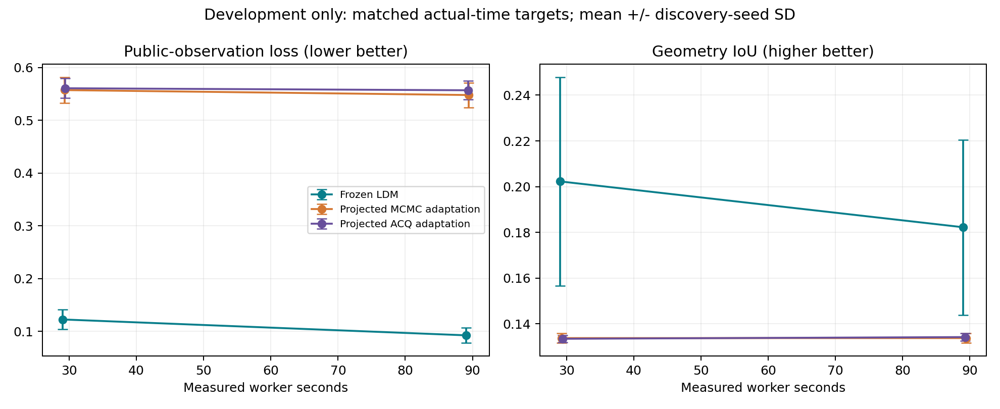

2026-10-27 · 独立于r3，保留原结果、原候选和收据。以下为开发验证比较，不是重新测试r3，也不是新的独立泛化证明。
r3原适配器将超过四个连通体的提议直接拒绝；高斯场水平集提议频繁产生孤立小体。对齐r3公开先验的开发复现中，种子43约94.5%的提议因此失效，评分调用中位数仅7.5（含初始化）。ACQ的warmup只累计已评分提议，门槛8尚未满足或满足时已到截止时间，16次复现均未进入采集决策。它不是未部署服务或关闭的代码分支。
另外捕获了四份默认二阶fast marching翻转体素符号的数值反例。一阶格式在三种尺度下消除这些反例，但仅修这一点仍有约94.5%的连通体拒绝。因此不能将主要异常归咎于数值格式。
| 开发训练版本（固定种子43参数） | 方法 | 超连通体拒绝/提议 | 评分调用中位数 | 采集启动 | 公开原始损失 |
|---|---|---|---|---|---|
| 原适配＋诊断 | MCMC | 1861/1968 | 7.5 | — | 1.822243 |
| 原适配＋诊断 | ACQ | 1859/1967 | 7.5 | 0/16 | 1.822243 |
| 仅一阶距离 | MCMC | 1856/1963 | 7.5 | — | 1.822229 |
| 仅一阶距离 | ACQ | 1857/1964 | 7.5 | 0/16 | 1.822229 |
| 可行投影＋一阶距离 | MCMC | 0/1901 | 125 | — | 1.412756 |
| 可行投影＋一阶距离 | ACQ | 0/1921 | 38 | 16/16 | 1.574724 |
在公开可行域内投影提议：超出连通体上限时按确定规则保留最大的连通体；体积越界使用已有受限连通构造；合法提议保持原连续场，不抹掉亚体素位移。之后使用一阶距离，并继续严格检查占据符号和全部硬约束。未调低warmup，未改温度、步长、六份冻结配置或评分定义。32次开发验收全部成功、无invalid，ACQ全部启动并实际在4候选间决策；14项数值检查和10项远程pytest通过。
投影改变了提议分布。修复版是受约束随机优化适配器，不能声称仍满足严格后验MCMC的详细平衡；当前ACQ是共享提议族上的Bayesian ridge采集适配器，不代表所有采集方法。启动成功也不等于代理决策一定有收益。
4个开发验证父体、8案例，均与开发训练父体分离。3份LDM原冻结赢家和6份修复后基线，执行种子47/48/49，30秒和90秒两个目标，共432次成功求解。各任务2CPU、4GiB，统一worker入口绝对截止时间，计入导入及初始化，留1秒输出，额外5秒硬保护；抵消原算法不同的软截止比例，不sleep补齐。LDM42的小网格提前结束特例仅在计时副本关闭，全部计时副本另存摘要。下表时间均为实测worker时间，不用目标值替代。
均值±标准差跨三个冻结发现种子；父体先等权聚合，标准差不是置信区间。公开观测损失L/(1+L)与IoU分别报告。本开发验证集没有独立确认测量，不能与r3独立确认损失横向混为同一指标；也没有重新做等发现预算的算法搜索。
| 目标秒 | 方法 | 公开损失↓ | IoU↑ | worker秒 | 容器墙钟秒 | CPU秒 |
|---|---|---|---|---|---|---|
| 30 | LDM | 0.122503 ± 0.018762 | 0.202288 ± 0.045565 | 29.038 | 29.480 | 29.107 |
| 90 | LDM | 0.092483 ± 0.014105 | 0.182236 ± 0.038302 | 89.037 | 89.476 | 89.103 |
| 30 | MCMC | 0.557041 ± 0.024407 | 0.133763 ± 0.002002 | 29.284 | 29.727 | 29.354 |
| 90 | MCMC | 0.547681 ± 0.023614 | 0.133772 ± 0.002051 | 89.458 | 89.902 | 89.527 |
| 30 | ACQ | 0.560510 ± 0.018524 | 0.133458 ± 0.001507 | 29.428 | 29.866 | 29.497 |
| 90 | ACQ | 0.556719 ± 0.017855 | 0.134205 ± 0.001592 | 89.344 | 89.783 | 89.412 |

结果解释：30秒档公开损失为LDM 0.122503、MCMC 0.557041、ACQ 0.560510；90秒档为0.092483、0.547681、0.556719。LDM在两个时间档的四个父体等权比较中均更低，说明这批开发数据上的优势不能仅由原来多用24%的时间解释。但这不是独立确认误差，不能把这里约78%–83%的相对降低搬到r3泛化结论中。
90秒档IoU分别为0.1822、0.1338、0.1342，几何恢复仍弱。LDM增加时间后公开损失改善，而平均IoU由0.2023降至0.1822：继续优化稀疏观测并不保证恢复真实形状。四父体中也有一个父体的LDM IoU略低于基线，不能只展示均值。
| 组 | 目标秒 | 公开损失 | IoU | 实测秒范围 | 调用中位数 | invalid | ACQ启动/24 | 投影率 | 评分后占据未变率 |
|---|---|---|---|---|---|---|---|---|---|
| acq-3407 | 30 | 0.574301 | 0.1323 | 29.10–29.96 | 11.5 | 0.00% | 24 | 77.3% | 15.7% |
| acq-3407 | 90 | 0.571573 | 0.1327 | 89.11–89.93 | 29.0 | 0.00% | 24 | 83.0% | 5.8% |
| acq-42 | 30 | 0.539455 | 0.1352 | 29.11–29.87 | 10.5 | 0.00% | 24 | 84.2% | 6.7% |
| acq-42 | 90 | 0.536909 | 0.1359 | 89.11–89.89 | 28.0 | 0.00% | 24 | 82.3% | 2.4% |
| acq-43 | 30 | 0.567774 | 0.1329 | 29.11–29.85 | 14.5 | 0.00% | 24 | 89.7% | 3.4% |
| acq-43 | 90 | 0.561675 | 0.1340 | 89.10–89.97 | 32.0 | 0.00% | 24 | 87.4% | 1.5% |
| ldm-3407 | 30 | 0.104608 | 0.2301 | 28.96–28.99 | — | — | — | — | — |
| ldm-3407 | 90 | 0.081127 | 0.1800 | 88.96–88.98 | — | — | — | — | — |
| ldm-42 | 30 | 0.120874 | 0.1497 | 29.04–29.05 | — | — | — | — | — |
| ldm-42 | 90 | 0.088052 | 0.1451 | 89.04–89.05 | — | — | — | — | — |
| ldm-43 | 30 | 0.142026 | 0.2270 | 29.05–29.17 | — | — | — | — | — |
| ldm-43 | 90 | 0.108271 | 0.2216 | 89.04–89.17 | — | — | — | — | — |
| mcmc-3407 | 30 | 0.578603 | 0.1326 | 29.11–29.59 | 32.0 | 0.00% | 0 | 74.2% | 5.5% |
| mcmc-3407 | 90 | 0.574617 | 0.1331 | 89.12–89.93 | 100.5 | 0.00% | 0 | 53.0% | 1.8% |
| mcmc-42 | 30 | 0.530544 | 0.1361 | 29.11–29.50 | 31.5 | 0.00% | 0 | 73.9% | 2.1% |
| mcmc-42 | 90 | 0.530544 | 0.1361 | 89.11–89.86 | 100.5 | 0.00% | 0 | 40.7% | 0.7% |
| mcmc-43 | 30 | 0.561976 | 0.1326 | 29.10–29.51 | 31.5 | 0.00% | 0 | 86.0% | 1.3% |
| mcmc-43 | 90 | 0.537883 | 0.1321 | 89.11–89.76 | 100.5 | 0.00% | 0 | 66.2% | 0.5% |
ACQ每次决策需构建多个提议并拟合代理，所以同时间下真实评分调用可能少于MCMC；只有最终质量改善才能证明这笔开销值得。可行投影率高说明原提议族仍与硬拓扑约束不匹配，投影修复了可执行性，不能据此宣称已找到最优提议设计。
本次90秒档MCMC评分调用中位数100.5，ACQ为29.5；ACQ公开损失反而高约1.65%，未证明采集开销值得。基线仍有部分执行最佳值等于初始化：MCMC 18/72、ACQ 21/72。它们已实际评分不同占据形状，不能再归因于未启动或全部提议非法；仍可能存在提议效率、代理特征和冻结参数与任务不匹配的问题。本轮没有针对验证结果继续改设计，也没有把“运行问题修复”包装成“已充分调优强基线”。这些剩余机制的区分需要新的开发训练消融，不能由本比较直接断言。
原开发数据没有r3体积/连通体上限，面积正则也不同。识别后停止了自己的早期比较控制器，保留INVALID-POLICY记录，该批结果不进入本报告。最终开发副本通过冻结public_priors函数对齐公开先验；24案例真值均符合约束。12个开发父体与r3测试24父体零重叠，仅核对manifest身份，未读取测试反馈进行修复或选参。
r3的29份完成标记、账本及选型控制文件SHA256复核不变，r3候选未覆盖。开发验证只在方案冻结后运行，不依验证结果调参；若未来需要泛化结论，应另建未见父体与独立确认测量，当前已揭示r3测试集不得复用为未见测试。
九份冻结计时源码：acq-3407 · acq-42 · acq-43 · ldm-3407 · ldm-42 · ldm-43 · mcmc-3407 · mcmc-42 · mcmc-43